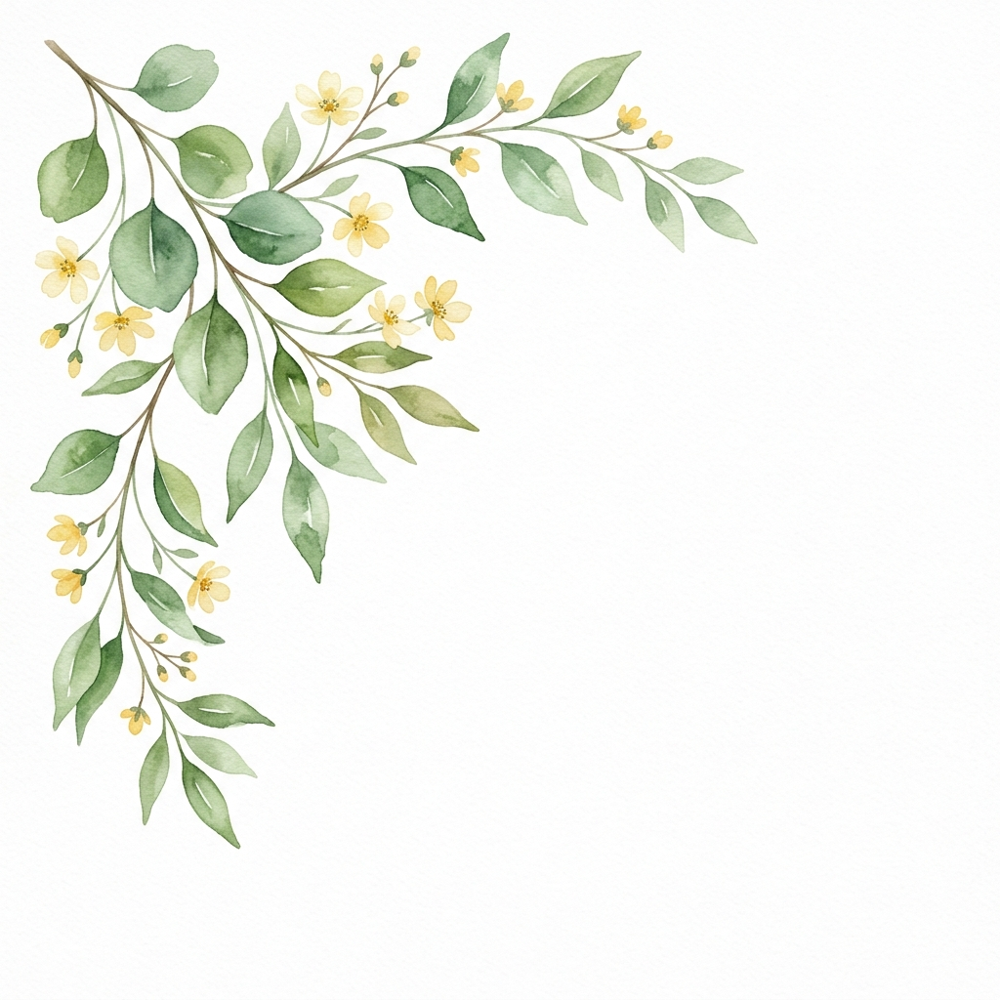
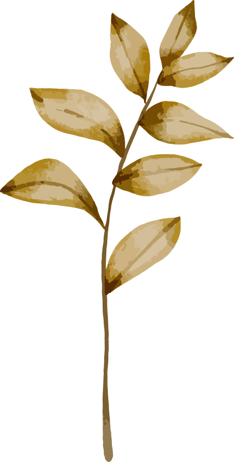

Nhặt một điều nhỏ
cho mình
Có những điều chẳng thay đổi được cuộc đời.
Nhưng đôi khi lại làm một ngày bình thường
trở nên dễ thương hơn.
"Trái tim bạn là bến đỗ bình yên nơi tâm hồn lắng lại. Lần thấy điều nhỏ nhoi đó là... Cùng nhau, chúng ta bước những điều giản dị, thành điều diệu kỳ."
“Một cái ôm không hứa rằng mọi thứ sẽ ổn.
Nó chỉ nói rằng ‘mình ở đây, cùng bạn.’”

“Tất cả những điều ta ghép lại – chính là ta.”
Một góc nhỏ tràn đầy vạt nắng, vị ngọt của vườn cây, tiếng bàn phím lạch cạch và chú mèo nằm lười bên cửa
sổ. Nơi những mầm cây được ươm lên, mang theo những thông điệp dịu dàng dành cho bạn. Một góc nhỏ trong
trẻo
và dịu dàng, chờ bạn ghé qua và khám phá.
Nhấn vào bất kỳ mầm cây nào để tưới tắm và nhặt lấy mảnh ghép của bạn.
“Tất cả những điều ta ghép lại – chính là ta.”
Chạm vào một mẫu nhỏ 🌸
Bạn không biết bên trong là gì. Có thể là một nụ cười, một lời nhắc, một câu hỏi,
hoặc chỉ là một điều vô tri nhưng khiến bạn bật cười.
